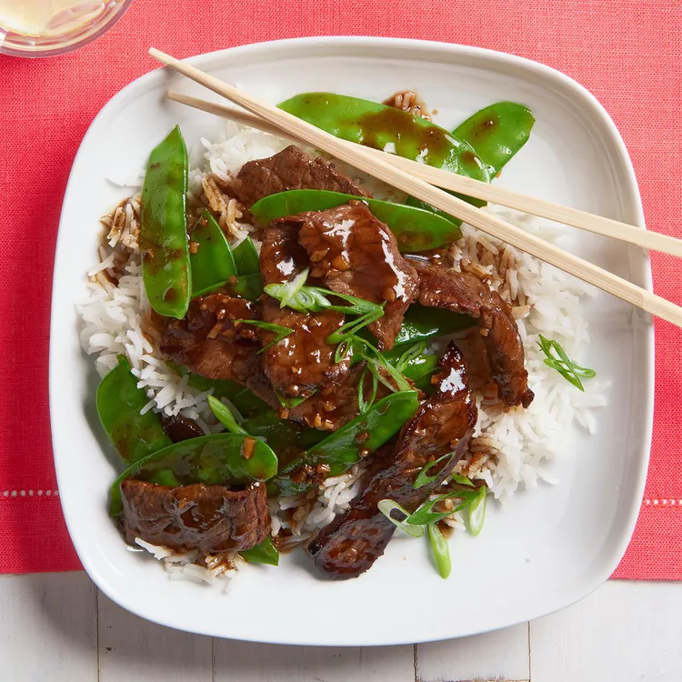

Asian Beef with Snow Peas (🥗)
Back Home

Description:
This Beef with Snow Peas is an easy dinner recipe! Tender marinated beef and crisp peas go perfectly over rice or noodles for a delicious weeknight supper.
Ingredient Lists:
- 3 tablespoons soy sauce
- 2 tablespoons rice wine
- 1 tablespoon brown sugar
- ½ teaspoon cornstarch
- 1 tablespoon vegetable oil
- 1 tablespoon minced fresh ginger root
- 1 tablespoon minced garlic
- 1 pound beef round steak, cut into thin strips
- 8 ounces snow peas
Directions:
- Step 1: In a small bowl, combine the soy sauce, rice wine, brown sugar and cornstarch. Set aside.
- Step 2: Heat oil in a wok or skillet over medium high heat. Stir-fry ginger and garlic for 30 seconds. Add the steak and stir-fry for 2 minutes or until evenly browned. Add the snow peas and stir-fry for an additional 3 minutes. Add the soy sauce mixture, bring to a boil, stirring constantly. Lower heat and simmer until the sauce is thick and smooth. Serve immediately.